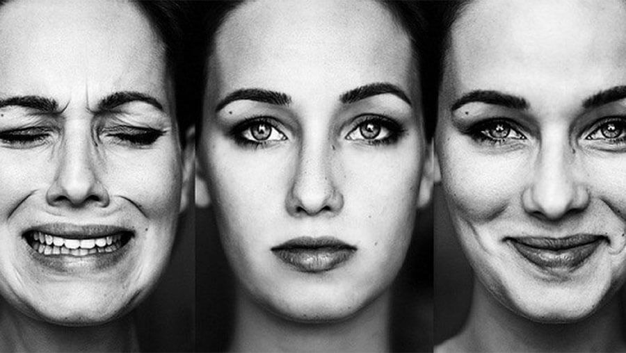

O Transtorno Bipolar é uma condição psiquiátrica crônica que provoca alterações intensas no humor, variando entre episódios de euforia extrema (mania ou hipomania) e episódios de depressão profunda. Essas mudanças não são apenas oscilações emocionais comuns do dia a dia, mas alterações graves e persistentes que afetam significativamente a vida da pessoa em todas as áreas: trabalho, estudos, relacionamentos e saúde física. É como se o cérebro perdesse o equilíbrio na regulação do humor, fazendo com que a pessoa experimente períodos de energia excessiva e pensamentos acelerados, seguidos por períodos de cansaço extremo, tristeza e desesperança. Há diferentes tipos de Transtorno Bipolar. O Transtorno Bipolar tipo I é caracterizado por episódios maníacos intensos que duram pelo menos uma semana e, frequentemente, são seguidos por episódios depressivos. Já o Transtorno Bipolar tipo II envolve episódios de hipomania (uma forma mais leve de mania) intercalados com episódios depressivos graves. Existe também o Transtorno Ciclotímico, no qual ocorrem flutuações crônicas entre sintomas leves de hipomania e depressão, mas sem atingir a gravidade necessária para um diagnóstico de Bipolar I ou II. O início do transtorno geralmente ocorre no final da adolescência ou início da vida adulta, mas pode surgir em qualquer idade. As causas exatas ainda não são totalmente compreendidas, mas sabe-se que há uma forte componente genética — pessoas com familiares de primeiro grau com o transtorno têm maior risco de desenvolvê-lo. Além disso, fatores ambientais como estresse crônico, uso de substâncias e traumas emocionais podem atuar como gatilhos. É importante ressaltar que o Transtorno Bipolar não é uma questão de "dupla personalidade", como muitas vezes é confundido no senso comum. A pessoa não se transforma em alguém completamente diferente, mas sim sofre oscilações severas de humor que prejudicam sua percepção da realidade, suas decisões e seu funcionamento cotidiano. Por isso, o diagnóstico deve ser feito por um psiquiatra experiente, baseado na observação do padrão dos episódios e no histórico do paciente.
Os sintomas do Transtorno Bipolar dependem do tipo de episódio que a pessoa está vivendo — depressivo ou maníaco/hipomaníaco. Durante a fase maníaca, a pessoa pode apresentar humor excessivamente elevado, sensação de grandiosidade (acreditar que tem poderes especiais ou habilidades superiores), necessidade reduzida de sono (dorme apenas duas ou três horas sem sentir cansaço), fala acelerada, pensamento rápido, impulsividade, aumento da libido e comportamentos imprudentes, como gastos exagerados, envolvimento em situações de risco ou decisões precipitadas. Em casos mais graves, a mania pode incluir sintomas psicóticos, como delírios (crenças falsas) ou alucinações. Já a hipomania, presente no tipo II, apresenta sintomas semelhantes, mas em intensidade menor, sem causar prejuízos graves na vida da pessoa. Muitas vezes, os sintomas hipomaníacos são confundidos com fases de “alto desempenho”, pois a pessoa pode parecer extremamente produtiva, carismática e cheia de energia — o que dificulta o diagnóstico. Durante a fase depressiva, os sintomas se assemelham aos de uma depressão maior: tristeza profunda, desesperança, perda de prazer em atividades, alterações no sono e apetite, fadiga, baixa autoestima, lentidão nos pensamentos, dificuldades de concentração e, em casos mais graves, ideação ou tentativas de suicídio. Essa alternância entre fases e a intensidade das oscilações causam grande sofrimento e impacto na vida do paciente e de seus familiares. Algumas pessoas apresentam episódios mistos, em que sintomas de mania e depressão ocorrem simultaneamente. Por exemplo, o indivíduo pode se sentir profundamente deprimido, mas agitado, impulsivo e com pensamentos acelerados. Esses quadros são particularmente perigosos e exigem atenção médica imediata.
Lidar com o Transtorno Bipolar exige uma abordagem combinada de tratamento médico, psicológico e mudanças no estilo de vida. O primeiro passo é o diagnóstico correto, pois muitas pessoas passam anos sendo tratadas apenas para depressão, sem que a parte maníaca do transtorno seja reconhecida. Um diagnóstico errado pode agravar os sintomas — por exemplo, o uso inadequado de antidepressivos sem estabilizadores de humor pode induzir episódios maníacos. O tratamento principal é feito com medicamentos estabilizadores de humor, como o lítio, ácido valproico, lamotrigina e carbamazepina. Em alguns casos, o psiquiatra também pode prescrever antipsicóticos atípicos ou antidepressivos, sempre com cautela e acompanhamento regular. Esses medicamentos ajudam a manter o humor estável, evitando recaídas e reduzindo a intensidade dos episódios. É fundamental que a medicação seja tomada conforme prescrição médica — parar por conta própria é perigoso e pode desencadear novas crises. A psicoterapia é outro pilar essencial. A terapia cognitivo-comportamental ajuda o paciente a entender seus pensamentos, identificar gatilhos e desenvolver estratégias para lidar com os sintomas. A psicoeducação é especialmente importante, pois ensina a pessoa e seus familiares sobre o transtorno, seus sintomas, sinais de alerta e formas de prevenir recaídas. Envolver a família no processo terapêutico melhora a convivência e o suporte no ambiente doméstico. No dia a dia, estabelecer uma rotina regular de sono, alimentação e atividades é fundamental. Dormir bem é uma das formas mais eficazes de prevenir episódios maníacos, pois a privação de sono é um gatilho comum. Praticar exercícios físicos regularmente, evitar álcool e drogas e reduzir o estresse também ajudam na estabilidade emocional. Registrar os ciclos de humor em diários ou aplicativos pode facilitar a percepção de padrões e antecipar crises. O Transtorno Bipolar não tem cura, mas é perfeitamente possível viver bem com ele. Com o tratamento certo, acompanhamento contínuo e apoio familiar, muitas pessoas levam vidas produtivas, estáveis e gratificantes. O segredo está em reconhecer o transtorno como uma condição médica real e tratável, e buscar ajuda especializada sem medo ou vergonha.